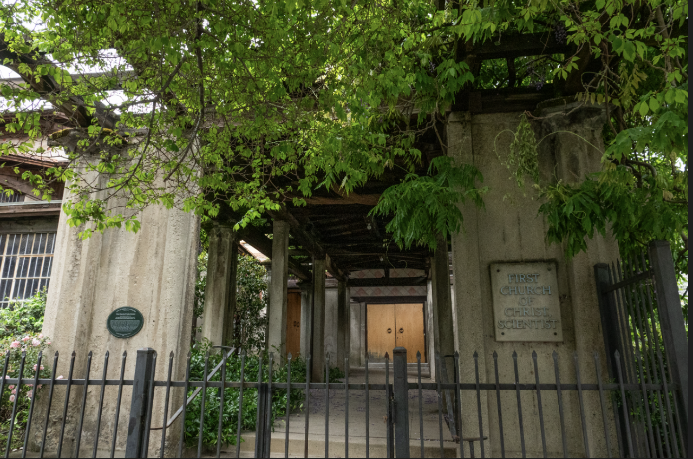
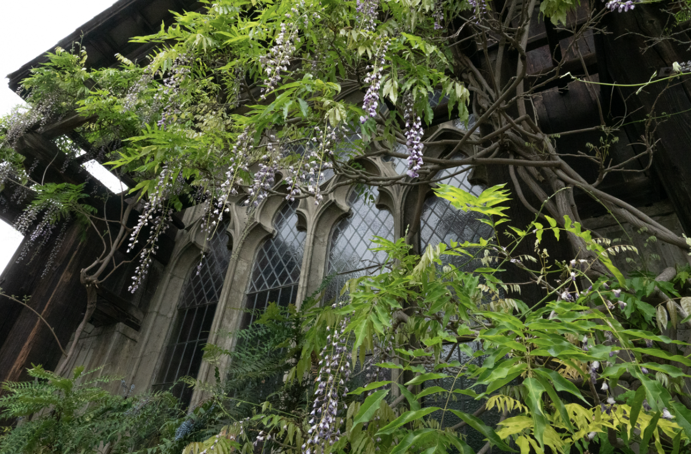

Upon my arrival at my freshman year dorm, I was expecting the street art, thrift stores and booksellers I found on Telegraph Avenue. What I didn’t expect was the church next door to me, with its Sunday crowds, preschool-age kids playing under my window and, on one occasion, a cold-brew tasting event. Within a one-block radius of that church, there are three other churches. Within three blocks, there are more than 10.
A Google Maps search for churches in Berkeley yields more than 100 results.
Ann Harlow, board president of the Berkeley Historical Society, reminded me that this isn’t necessarily unusual for a college town. She said Northwestern, the University of Michigan and Princeton are all crowded with churches, which perhaps bustled in to recruit nonreligious college goers. But Berkeley is a unique case among California’s university towns. In the 1970s, one of Berkeley’s slogans was “The City of Churches.”
Perhaps these connections are no surprise, given UC Berkeley was initially founded as the Contra Costa Academy by a collaboration between Congregationalists and New School Presbyterians in 1853 in Oakland.
But today, as churchgoing declines nationwide, according to a Gallup poll, Harlow said Berkeley’s churches have innovated to hold on to their real estate. Some offer the space to preschools or elementary schools during the week. Other buildings that look like churches are no longer churches at all, instead housing apartment buildings, dance studios or playhouses. Nevertheless, the city’s history is closely intertwined with its churches.
First Congregational Church of Berkeley
The First Congregational Church of Berkeley, founded in 1874, inspired a play by Kathryn Lucchese about its historical connection with Japanese incarceration in the 1940s. Its current location, a towering brick building with arched windows, dates back to 1925.
Lucchese wrote a stage play about the church, “A Cup of Cold Water,” depicting a moment in the early 1940s when the church served as a Civil Control Center where Japanese Americans registered and were deported to incarceration at the Tanforan race track.


This is how, Lucchese said, the church came to be known as “the church that served tea” among Japanese Americans in the area. She said Japanese Americans in Berkeley turned out “in force” to see a Berkeley Historical Society exhibit in 2024 and 2025 where people could search for family members who used to live in Berkeley and see the address they went to after being released from incarceration.
The exhibit also featured the Ireicho, a book with a list of those sent to the camps, including the ancestors of Berkeley Mayor Adena Ishii.
First Church of Christ Scientist
Bernard Maybeck built the First Church of Christ Scientist on Dwight and Bowditch. The church, a national landmark, can be recognized for its wisteria blooms in the spring months.


Unitarian Universalist Church of Berkeley
The Unitarian Universalist Church of Berkeley, of which Harlow is a member, was founded in 1891.
“In the early days of that church … there was a close connection with (UC Berkeley),” Harlow said. “The university basically was started by a couple of ministers as a high school in Oakland.”


During the 1950s, the Unitarian Universalist Church was one of several congregations that refused to sign the Levering Act, an effort to extend control over the religious activity of the state’s citizens and ensure loyalty amid McCarthy-era repression, according to the church’s website. The refusal earned the church a tax from the state, and ultimately brought the church all the way to the Supreme Court, where the Act was deemed unconstitutional.
As campus expanded through the 1950s, the church became a part of it, and is now used as a dance studio for campus classes. It began in a building on Bancroft and Dana streets, and moved to Kensington in 1961.
Newman Hall – Holy Spirit Parish
Newman Hall has occupied its brutalist building on Dwight Way since Mario Ciampi constructed it in 1967. The parish was previously housed in a Bernard Maybeck-designed building on Ridge Road until the congregation outgrew itself.


Holy Hill
On Northside, just down the block from our Daily Cal office, is the winding intersection of Le Conte Avenue, Ridge Road and Scenic Avenue, or, more colloquially, “Holy Hill.” The corner houses several religious schools, among them members of the Graduate Theological Union, a collaboration between seven schools and five academic centers founded in 1962.
“The best spot to contemplate Berkeley’s spiritual essence is from Holy Hill, a grouping of theological institutes that looks down upon the neighboring university — but in a good way,” local journalist David Weinstein wrote in his book “It Came from Berkeley: How Berkeley Changed the World.”
By 1911, Berkeley housed three seminaries. By 1969, seven seminaries had moved up to Holy Hill. The union regularly collaborates with campus, allowing students to take courses at both schools and access campus libraries in a long-standing agreement.